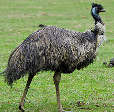

Эму

Распространен по кустарниковым песчаным пустыням и степям Австралии и Тасмании.
Длина 150—190 см, вес 30—55 кг. Эму способен бежать со скоростью 50 км/ч.
Питаются эму плодами, кореньями, травой и другим растительным кормом. В основном кормятся ранним утром. Нередко посещают посевы зерновых культур, нанося ущерб урожаю. Эму не любит, как страусы, купаться в песке, он предпочитает воду, причём неплохо плавает несмотря на свои массивные размеры.
В брачных играх самец и самка становятся друг напротив друга, склоняют головы до самой земли и качают ими над землёй. Затем самец ведёт самку к сделанному им гнезду. Гнездо эму — ямка, выложенная травой, листвой, корой, ветками. Эму полигамы, в одно гнездо откладывают яйца несколько самок, после чего кладка в общей сложности насчитывает 15—25 яиц. Иногда у самца бывает лишь одна самка, которая откладывает 7—8 яиц. Насиживанием занимается только самец. Насиживание длится около двух месяцев, в течение которых самец очень мало и редко ест. В процессе насиживания яйца из тёмно-зелёных становятся чёрно-фиолетовыми. Птенцы вылупляются весом в 0,5 кг. В этот период охраняющий своё потомство самец становится очень агрессивным, и, если его потревожить, ударом ноги может сломать человеку кости.